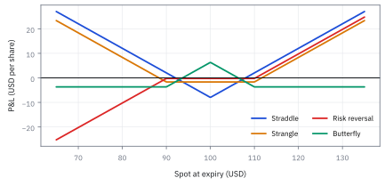
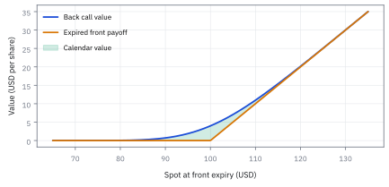
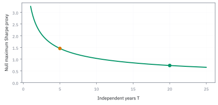

14.6 The Multiple Testing Problem
นับทุกแบบที่เคยลอง ก่อนเชื่อผู้ชนะ
ลองกุญแจ 200 ดอกกับประตูที่ไม่มีดอกใดถูก; จะมีบางดอกดูเหมือนเปิดได้เพราะความบังเอิญหรือไม่?
เฉลย: มีแน่ และยิ่งลองมาก โอกาสเห็นผู้ชนะปลอมยิ่งสูง. multiple testing อธิบายว่าทำไม p-value เดี่ยวไม่รู้ว่าคุณลองมากี่ครั้ง—เหมือนสุ่มโทรหา 200 เบอร์แล้วดีใจกับคนรับสาย.
ศัพท์ที่ใช้ในหัวข้อนี้
- multiple testing
- multiple testing คือการทดสอบ hypotheses หลายข้อแล้วตีความผู้ชนะด้วยเกณฑ์ของการทดสอบเดียว ใช้ระบุ selection bias จาก parameter search, universe search และ researcher degrees of freedom
- family-wise error rate (FWER)
- family-wise error rate คือโอกาสที่จะเกิด false positive อย่างน้อยหนึ่งครั้งในทั้งชุดการทดสอบ ใช้คุมความเสี่ยงเมื่อของปลอมเพียงหนึ่งกลยุทธ์มีต้นทุนสูงมาก
- false discovery rate (FDR)
- false discovery rate คือสัดส่วนเฉลี่ยของ false positives ในกลุ่มที่ประกาศ discovery ใช้คัด candidate จำนวนมากเพื่อนำไปทดลองต่อ โดยยอมให้มีของปลอมปนในงบที่ประกาศ
- Bonferroni correction
- Bonferroni correction แบ่ง error budget ทั้งชุดให้แต่ละ test โดยใช้ $\alpha/M$ ใช้คุม family-wise error โดยไม่ต้องสมมติว่า tests อิสระ
- Benjamini-Hochberg procedure
- Benjamini-Hochberg procedure เรียง p-values และเทียบกับเส้น threshold ตามลำดับ ใช้ควบคุม false discovery rate ในการ screen signals อย่างเป็นระบบ
- data snooping
- data snooping คือการให้ผลจากข้อมูลเดิมชี้นำการเลือก model ซ้ำแล้วนำผลนั้นมาทดสอบเหมือนไม่เคยเลือก ใช้เรียกความเสียหายของ out-of-sample evidence ที่ถูกใช้ไปแล้ว
- Sharpe ratio (SR)
- Sharpe ratio คือ excess return เทียบกับ volatility ใน horizon เดียวกัน ใช้สรุปผลตอบแทนต่อความเสี่ยง แต่ threshold ต้องปรับตามจำนวน trials และ research paths ที่ลอง
- Law of Large Numbers (LLN)
- LLN บอกว่าค่าเฉลี่ยจากการทำซ้ำจำนวนมากเข้าใกล้ expected value หรือค่าเฉลี่ยระยะยาวภายใต้เงื่อนไขที่เหมาะสม ใช้เตือนว่าผลชนะระยะสั้นยังไม่ใช่ evidence ระยะยาว
- Central Limit Theorem (CLT)
- CLT อธิบายรูปโดยประมาณของ sampling distribution เมื่อรวม observations จำนวนมาก ใช้สร้าง test statistic และ interval แต่ไม่ได้ล้างปัญหา selection หรือ tail risk
สัญลักษณ์ที่ใช้ในหัวข้อนี้
| สัญลักษณ์ | ความหมาย | หน่วย |
|---|---|---|
| $M$ | จำนวนกลยุทธ์ที่ทดสอบทั้งหมด รวมที่ทดสอบแล้วทิ้งไปด้วย | count |
| $\alpha$ | งบความผิดพลาดของทั้งชุด ไม่ใช่ของการทดสอบครั้งเดียว | ไม่มีหน่วย |
| $\alpha^*$ | เกณฑ์ต่อหนึ่งการทดสอบ หลังหารงบข้างบนด้วย $M$ ตามวิธี Bonferroni | ไม่มีหน่วย |
| $p_i,p_{(i)},q$ | p-value ของ test $i$, p-value ที่เรียงลำดับ และ false discovery rate target | ไม่มีหน่วย |
| $\mathrm{FWER}$ | โอกาสที่จะประกาศของปลอมอย่างน้อยหนึ่งชิ้นในทั้งชุด | ไม่มีหน่วย |
| $V$ | จำนวนของปลอมที่ประกาศออกไป | count |
| $R$ | จำนวนที่ประกาศทั้งหมด ทั้งจริงและปลอม | count |
| $T$ | จำนวนปีที่เป็นอิสระต่อกันจริง | years |
| $z$ | จุดตัดบนระฆังคว่ำมาตรฐาน ที่ขยับสูงขึ้นตามจำนวนครั้งที่ทดสอบ | ไม่มีหน่วย |
| $\widehat{\mathrm{SR}}$ | อัตราส่วนที่รายงาน ซึ่งต้องสูงกว่าเกณฑ์ที่ปรับแล้วจึงจะนับ | ไม่มีหน่วย |
ที่มาที่ไป: ถ้าลองมากพอ ยังไงก็ต้องเจอสักตัว
ปัญหานี้เป็นปัญหาที่ใหญ่ที่สุดในงานวิจัยกลยุทธ์ และเป็นเหตุผลหลักที่ผลวิจัยจำนวนมากซ้ำไม่ได้
กลไกเรียบง่ายมาก ถ้าทดสอบสี่ร้อยกลยุทธ์ที่ไม่มีฝีมือเลยสักตัว ที่ระดับนัยสำคัญห้าเปอร์เซ็นต์ จะมีราวยี่สิบตัวที่ผ่านเกณฑ์โดยบังเอิญ แล้วเราก็หยิบตัวที่ดูดีที่สุดมาโชว์
Carlo Emilio Bonferroni เสนอวิธีแก้ที่ตรงไปตรงมาที่สุด คือแบ่งงบความผิดพลาดให้เท่ากันทุกการทดสอบ ซึ่งได้ผลแต่เข้มมากจนทิ้งของดีไปด้วย
Yoav Benjamini กับ Yosef Hochberg เสนอทางที่ผ่อนกว่าในปี 1995 คือยอมให้มีของปลอมปนได้บ้าง แต่คุมสัดส่วนของมัน ซึ่งใช้ได้จริงกว่าเมื่อทดสอบเป็นร้อย
ความเป็นมา — จาก Bonferroni สู่การปฏิวัติ False Discovery Rate ของ Benjamini และ Hochberg
Carlo Emilio Bonferroni นักคณิตศาสตร์ชาวอิตาลี เสนออสมการความน่าจะเป็นในปี 1936 ซึ่งกลายมาเป็นรากฐานของการปรับระดับนัยสำคัญเมื่อต้องทดสอบหลายสมมติฐานพร้อมกัน โดยมีเป้าหมายคือคุม Family-Wise Error Rate (FWER) ไม่ให้มีของปลอมหลุดรอดเลยแม้แต่ตัวเดียว
แต่ในทางปฏิบัติ การหารงบความผิดพลาดด้วยจำนวนการทดสอบ $M$ ตรง ๆ เข้มงวดเกินไปอย่างมหาศาล เมื่อเราทดสอบกลยุทธ์หลายร้อยแบบ เกณฑ์จะถูกดันจนสูงลิบ ทำให้ statistical power ลดลงอย่างมาก และคัดทิ้งกลยุทธ์ที่มี alpha จริงไปจนหมด นักวิจัยจึงตกอยู่ในภาวะที่ไม่มีกลยุทธ์ใดผ่านเกณฑ์ได้เลย
จนกระทั่งในปี 1995 Yoav Benjamini และ Yosef Hochberg ได้เปลี่ยนวิธีคิดด้วยการเสนอ False Discovery Rate (FDR) พวกเขาชี้ว่าในงานคัดกรองขนาดใหญ่ เราไม่จำเป็นต้องกลัวของปลอมตัวแรกสุด แต่ควรคุมสัดส่วนของปลอมในกลุ่มที่เลือกให้ไม่เกินงบที่ตั้งไว้ แนวคิดนี้ปฏิวัติวงการสถิติและกลายเป็นเครื่องมือหลักของการค้นหา alpha ในกองทุนเชิงปริมาณยุคปัจจุบัน
Worked Example — โจทย์และสิ่งที่ให้มา
โจทย์ให้อะไรมาบ้าง: จำนวน tests ไม่ได้หมายถึงแค่จำนวนแถวใน presentation. ทุก universe, factor transform, lookback, rebalance day, stop rule, cost assumption, filter และ chart ที่ใช้ตัดสินใจอาจเป็น research path. ตัวอย่างเช่น 20 lookbacks, 5 rebalance schedules และ 4 exit rules สร้าง candidate ได้ 400 แบบก่อนเริ่มเปลี่ยน test statistic
ในตัวอย่างนี้สมมติ 200 variants ที่ใช้ข้อมูลยาวเท่ากันและมี null ว่า alpha เป็นศูนย์ โดยตั้ง family error budget 5%. จำนวน 200 เป็น illustration ที่ตรวจได้; ถ้า search history กว้างกว่านี้ต้องนับให้กว้างตามจริง
ขั้นที่ 1 — ของปลอมที่คาดว่าจะผ่าน และโอกาสเจออย่างน้อยหนึ่งตัว
ยิ่งลองหลายสูตร ยิ่งมีโอกาสเจอสูตรผ่านเกณฑ์ด้วยความบังเอิญ แปดบรรทัดนี้แยกสองข้อความออกจากกัน ข้อแรกจริงเสมอ ข้อสองต้องขอเงื่อนไข และตัวเลขสุดท้ายคือเหตุผลที่ backtest ที่ผ่านเกณฑ์มาตรฐานไม่ได้แปลว่าอะไรเลย
นับจำนวนของปลอมที่ผ่านเกณฑ์ ด้วยตัวบ่งชี้ทีละการทดสอบ แล้วบวกค่าเฉลี่ยของแต่ละตัวตามกฎของหัวข้อ 1.3 กฎนี้ไม่ต้องขอ independence จำนวนที่คาดหมายจึงถูกเสมอ ไม่ว่าการทดสอบจะเกี่ยวกันแค่ไหน
บรรทัดสี่ต่างออกไป มันคูณโอกาสของทุกการทดสอบเข้าด้วยกัน ซึ่งใช้ได้เมื่อไม่เกี่ยวกัน ตรงนี้เป็นข้อสมมติจริง ๆ ไม่ใช่กฎที่ใช้ได้ฟรี แล้วเอาหนึ่งลบ ได้โอกาสเจออย่างน้อยหนึ่งตัว
แทนเลขจริง ลองสองร้อยสูตร คาดว่าจะมีของปลอมผ่านสิบตัว และโอกาสที่จะไม่เจอเลยแทบเป็นศูนย์
จริง ๆ แค่สิบสี่สูตรก็เกินครึ่งแล้ว นั่นคือขนาดของปัญหา ไม่ต้องรอให้ลองเป็นพันสูตร
แล้วเอาไปใช้ทำอะไรได้จริงบ้าง
การนับทุกแบบที่เคยลอง ก่อนเชื่อผู้ชนะ เป็นเรื่องที่แยกงานวิจัยจริงออกจากการหลอกตัวเอง
ใช้ปรับเกณฑ์การตัดสินเมื่อทดสอบหลายกลยุทธ์ ซึ่งเป็นสิ่งที่ทีมวิจัยทำทุกวัน
ใช้ประเมินงานวิจัยที่คนอื่นเสนอมา โดยถามว่าลองมากี่แบบก่อนจะได้ตัวนี้
ใช้ออกแบบกระบวนการวิจัย ให้บันทึกทุกอย่างที่ลอง ไม่ใช่บันทึกเฉพาะที่ได้ผล
ภาพ 14.6a — 5% ต่อครั้งกลายเป็นเกือบแน่นอนเมื่อสะสม

เส้นแสดง $1-(1-0.05)^M$ เมื่อ tests independent. ที่ $M=14$ โอกาสได้ false positive อย่างน้อยหนึ่งตัวเกิน 50%, ที่ $M=45$ เกิน 90%, และที่ 200 เป็น 99.9965%; การไม่เจออะไรเลยต่างหากที่แปลก.
ขั้นที่ 2 — Bonferroni: คุมทั้ง family โดยแบ่ง error budget
วิธีแก้ที่ตรงไปตรงมาที่สุด คือแบ่งงบความผิดพลาดให้เท่า ๆ กันทุกการทดสอบ เจ็ดบรรทัดนี้แสดงว่าขอบเขตที่ใช้เป็นขอบเขตหยาบ จึงเข้มเกินจำเป็น แต่ความเข้มนั้นไปในทางที่ปลอดภัย ซึ่งเป็นสิ่งที่ risk control ต้องการ
เหตุการณ์ที่ต้องคุมคือมีของปลอมผ่านอย่างน้อยหนึ่งตัว ซึ่งเป็นการรวมกองของทุกการทดสอบ
ใช้ขอบเขตที่ว่าโอกาสของการรวมกอง ไม่เกินผลบวกของโอกาสแต่ละกอง จริงเสมอเพราะการบวกนับส่วนที่ทับซ้อนซ้ำ ข้อดีคือใช้ได้แม้การทดสอบเกี่ยวกัน ซึ่งต่างจากบรรทัดที่คูณโอกาสในขั้นที่ 1
แทนเกณฑ์ใหม่ที่เท่ากันทุกตัว บังคับให้ผลรวมไม่เกินงบที่ตั้งไว้ แล้วแก้หาเกณฑ์ใหม่ ได้การแบ่งงบความผิดพลาดเท่า ๆ กัน
แทนเลขจริง สองร้อยสูตรทำให้เกณฑ์เข้มขึ้นจนต้องมี Sharpe เกิน 1.638 ในห้าปีถึงจะผ่าน ซึ่งสูงกว่าที่กลยุทธ์จริงส่วนใหญ่ทำได้มาก
คำตอบ ตรวจเอง และแปลว่าอะไร
คำตอบและความหมาย: ภายใต้ null ทั้ง 200 tests, false positives ที่คาดหวังคือ 10 ตัว และถ้า tests independent โอกาสเจออย่างน้อยหนึ่งตัวคือ 99.9965%. Bonferroni ให้ per-test threshold 0.00025. สำหรับ two-sided normal test critical value คือ 3.6623; เมื่อใช้ Sharpe inference กับข้อมูลอิสระ 5 ปี จึงต้องมี Sharpe ขั้นต่ำประมาณ 1.638 จึงผ่าน threshold นี้
นอกจากนี้ extremum baseline ของ 200 independent Gaussian nulls มีค่าโดยประมาณ 1.456. ดังนั้น best in-sample Sharpe ที่ 1.40 อาจต่ำกว่ารางวัลที่ noise แจกให้โดยไม่ต้องมี signal. ให้ถือผลนี้เป็น candidate สำหรับ paper trade และ out-of-sample confirmation ไม่ใช่ deployable alpha
ตรวจเองใน 10 วินาที: กด 200*0.05 ต้องได้ false positives คาดหมาย 10 ตัว และ 0.05/200 ต้องได้ Bonferroni threshold 0.00025. ใช้เกณฑ์นี้คัด candidate ก่อนเปิด holdout หรือ paper trade.
ภาพ 14.6b — threshold Sharpe ต้องสูงขึ้นเมื่อ search กว้าง

เส้นแดงคือ Bonferroni two-sided threshold ที่ $T=5$ ปี และเส้นน้ำเงินคือ expected-maximum proxy $\sqrt{2\log(M)/T}$. ทั้งคู่โตช้ากว่า $M$ มาก แต่ไม่เป็นศูนย์: ไม่จดจำนวน tests คือการตั้งมาตรฐานให้ต่ำแบบมองไม่เห็น.
ขั้นที่ 3 — นิยามของขั้นตอนที่ยอมให้มีของปลอมปนได้ แต่คุมสัดส่วน
ขั้นตอนนี้แสดงลำดับการคัดกรองที่ยอมให้มีของปลอมปนได้ แต่คุมสัดส่วนของมันไว้ เรียงค่าจากน้อยไปมาก แล้วหาตำแหน่งสุดท้ายที่ยังอยู่ใต้เส้นที่ลาดขึ้น เก็บทุกตัวตั้งแต่ตัวแรกถึงตำแหน่งนั้น เส้นที่ลาดขึ้นทำให้วิธีนี้ผ่อนปรนกว่าขั้นที่ 2 ซึ่งใช้เส้นแบนที่ระดับต่ำสุด สิ่งที่รับประกันคือสัดส่วนของปลอมในกลุ่มที่เก็บโดยเฉลี่ยจะไม่เกินงบที่ตั้งไว้ ภายใต้เงื่อนไขที่การทดสอบมี independence หรือมีความเกี่ยวพันเชิงบวก
เรียง p-value จากน้อยไปหามาก แล้วเปรียบเทียบกับเส้นเกณฑ์ที่ลาดชันขึ้นตามลำดับ $i$ ขั้นตอนนี้ยอมรับของปลอมปนได้ แต่รับประกันว่า expected value ของสัดส่วนของปลอมต่อจำนวนที่เลือกทั้งหมดจะไม่เกินงบ $q$
นิยาม $Q=V/(R\vee1)$ คือสัดส่วน false discovery ถ้าไม่มีตัวใดผ่านเลยให้เป็นศูนย์ ทฤษฎีบทของ Benjamini และ Hochberg ยืนยันว่าค่าเฉลี่ยของสัดส่วนนี้ถูกคุมไว้ไม่เกิน $(m_0/M)q \le q$ เสมอเมื่อการทดสอบมี independence
แทนตัวเลข $M=200$ และ $q=0.10$ เส้นเกณฑ์จะขยับขึ้นก้าวละ 0.0005 เมื่อตรวจทีละตัวพบว่าสองตัวแรกผ่านเกณฑ์ แต่ตัวที่สาม 0.0020 สูงกว่า 0.0015 จึงหยุดและสรุปว่าเก็บสองกลยุทธ์แรกเป็น discovery
ขั้นที่ 4 — กลจดหมายทำนายฟุตบอล: เลือกผู้ชนะด้วยมือ
เรื่องนี้ไม่ใช่การเปรียบเทียบ แต่เป็นสูตรเดียวกับบรรทัดแรกของขั้นที่ 1 เป๊ะ ๆ ต่างกันแค่คนที่เลือกผู้ชนะเป็นคนนอก ไม่ใช่เราที่นั่งคัดผลลัพธ์ย้อนหลัง
โจทย์ให้อะไรมาบ้าง: ส่งจดหมาย 10,000 ฉบับ สัปดาห์แรกบอกครึ่งหนึ่งว่าทีมไหนจะชนะ อีกครึ่งบอกอีกทีม แล้วเก็บไว้เฉพาะฉบับที่ทายถูก ทำอย่างนี้สิบสัปดาห์
แต่ละฉบับทายถูกด้วยโอกาสหนึ่งในสอง ถ้าทายถูกติดกันสิบสัปดาห์ก็เหลือโอกาสหนึ่งในพันยี่สิบสี่ นี่คือค่า $\alpha$ ของปัญหา และจำนวนผู้รับคือ $M$
คูณกันได้ $9.77$ แปลว่าจากจดหมายหมื่นฉบับ จะมีคนราวสิบคนที่เห็นว่าทายถูกทั้งสิบครั้ง โดยที่ผู้ส่งไม่มีความรู้เรื่องฟุตบอลเลยแม้แต่นิดเดียว และตัวเลขนี้ไม่ได้ขึ้นกับดวง
ค่าใช้จ่ายคิดจากจำนวนฉบับที่ส่งจริง ซึ่งลดลงครึ่งหนึ่งทุกสัปดาห์ รวมกันได้ราวสองหมื่นฉบับ ถ้าคนที่เหลือยอมจ่ายคนละหนึ่งหมื่นดอลลาร์ กำไรสุทธิยังกว่าร้อยละแปดสิบของรายรับ
จุดที่ต้องเห็น: กลุ่มผู้รอดชีวิตไม่ได้ถูกคัดด้วยฝีมือ แต่ถูกคัดด้วยการรู้ผลลัพธ์ก่อน จึงไม่มีข้อมูลอะไรเกี่ยวกับความสามารถของพวกเขาเลย และนี่คือเหตุผลที่ track record ของกลุ่มที่ถูกคัดมาแล้วไม่ควรถูกนำไปใช้ตัดสินใจลงทุน
ขั้นที่ 5 — ผลเดียวกันโดยไม่มีคนโกง: ผู้จัดการที่ถูกไล่ออกหายไปจากข้อมูล
กลข้างบนต้องมีคนตั้งใจโกง แต่ผลแบบเดียวกันเกิดเองได้ในอุตสาหกรรมกองทุน ถ้าทุกปีคนที่แพ้ตลาดถูกไล่ออก และคนที่ชนะตลาดอยู่ต่อ ข้อมูลที่เหลืออยู่ในปีที่สิบ จะเหลือแต่คนที่ชนะรวด
ไม่มีใครโกง แต่ฐานข้อมูลถูกคัดมาแล้วด้วยตัวกฎการจ้างงานเอง
เริ่มจากกลุ่มผู้จัดการทั้งหมด แล้วให้ครึ่งหนึ่งอยู่ต่อในแต่ละปี ตารางสั้น ๆ แสดงสัดส่วนที่เหลือ หลังหนึ่งปี ห้าปี และสิบปี ซึ่งลดลงแบบทวีคูณ
จากหมื่นคนเหลือราวสิบคนในสิบปี เท่ากับตัวอย่างกลจดหมายเป๊ะ ๆ เพราะเป็นสูตรเดียวกัน และทั้งสิบคนมีประวัติชนะรวด โดยที่ฝีมือไม่ได้ถูกวัดเลย
ความต่างจากกลจดหมายมีแค่เจตนา ไม่ใช่ตัวเลข ตัวเลขเดียวกันเกิดได้ทั้งจากการโกง และการจ้างงานที่ดูสมเหตุสมผล
แปลว่าอะไร: ก่อนเชื่อผลงานของกองทุนที่รอดชีวิตมาได้ ให้ถามว่ากลุ่มตั้งต้นมีกี่แห่ง และมีกี่แห่งที่หายไปจากฐานข้อมูล เพราะอัตราการรอดต่างหากคือข้อมูล ไม่ใช่ประวัติของคนที่รอด
ภาพ 14.6c — Benjamini-Hochberg เก็บได้เท่าที่เส้นอนุญาต

เมื่อ $M=200$ และ $q=10\%$, p-values สี่ตัวแรกคือ 0.0002, 0.0009, 0.0020, 0.0040. สองตัวแรกอยู่ใต้เส้น $iq/M$; ตัวที่สามข้ามเส้น จึงเก็บแค่สอง candidates ไป paper trade แทนการประกาศว่าทั้งสี่เป็น discovery.
ภาพ 14.6d — เวลายาวลด baseline ของผู้ชนะปลอม

สำหรับ $M=200$, maximum-Sharpe proxy ลดตาม $1/\sqrt T$: จาก 1.456 ที่ห้าปีเป็น 0.728 ที่ยี่สิบปี. การลด search space มีประโยชน์ แต่การหาข้อมูลที่ยาวและ truly out-of-sample คือวิธีที่เปลี่ยน signal-to-noise ได้แรงกว่า.
research ledger ที่ต้องมาก่อน winner chart
| stage | ต้องบันทึก | control |
|---|---|---|
| idea | economic mechanism และ pre-specified null | reject hindsight story |
| search | universes, transforms, parameters, reruns | count $M$ or hierarchy |
| selection | validation metric, costs, tie-break rule | freeze code and data version |
| confirmation | untouched holdout, paper trade, capacity | no retuning on holdout |
| deployment | FWER/FDR rule and risk limits | low initial size; kill criteria |
ถ้า log หาย อย่าตั้ง $M=1$ เพียงเพราะจำไม่ได้; ใช้ conservative proxy และขอ independent replication
ตัวอย่างที่สอง — คำตอบและวิธีเช็ก
คำตอบ: จากจดหมายหมื่นฉบับและสิบสัปดาห์ จะมีผู้รอดชีวิตราวสิบคนที่ทายถูกทั้งสิบครั้ง โดยไม่ต้องมีฝีมือ และผู้จัดการกองทุนที่ถูกคัดด้วยกฎการไล่ออกให้ผลแบบเดียวกัน
ตรวจเองใน 10 วินาที: ยกกำลังสองสิบครั้งแล้วหารจำนวนตั้งต้น ต้องได้ราวสิบ ถ้าได้ตัวอื่นให้ตรวจว่าใช้จำนวนสัปดาห์ถูกหรือไม่
ใช้ตัดสินใจ: ก่อนซื้อผลงานที่ผ่านมา ให้ถามหาขนาดของกลุ่มตั้งต้นและจำนวนที่หายไป เพราะสองตัวเลขนั้นคือสิ่งที่บอกว่าผลงานที่เห็นมาจากฝีมือหรือมาจากการคัดเลือก
กับดัก: p-value เล็กไม่ได้แปลว่าโอกาสที่กลยุทธ์จริงสูง
p-value 0.03 ตอบคำถามเดียว: ถ้า null จริง โอกาสเห็นผลสุดโต่งเท่านี้หรือมากกว่าคือ 3% มันไม่ได้บอกว่า null มีโอกาสจริง 3%
ลองนับ 1,000 ไอเดีย สมมติมีของจริง 2% และ test มี power 50% เราจะเจอของจริง 10 ไอเดีย ส่วนอีก 980 ไอเดียให้ false positive ที่เกณฑ์ 5% ราว 49 ไอเดีย ดังนั้นผู้ผ่าน 59 ไอเดียมีของจริงเพียงราว 17% นี่คือเหตุผลที่ test เดี่ยวดูดีแต่รายชื่อผู้ชนะยังเต็มไปด้วย noise
Bonferroni ก็ไม่ใช่ยาวิเศษ test ที่สัมพันธ์กันทำให้จำนวนการลองอิสระต่ำกว่า raw count แต่การตัดสินใจของนักวิจัยนอก code ทำให้จำนวนทางเลือกจริงสูงกว่า grid ที่บันทึกไว้
ทางออกคือเก็บ experiment ledger แบบมี version ล็อก holdout ใช้ nested หรือ rolling validation แล้วค่อย paper trade พร้อม capacity และ drawdown limits ทีมที่ฆ่า false discovery ได้เร็วกำลังประหยัดเงิน ไม่ได้ทำวิจัยล้มเหลว
ข้อจำกัด: วิธีนี้สมมติอะไร และของจริงเป็นอย่างไร
| เรื่อง | วิธีนี้สมมติว่า | ของจริงเป็นอย่างไร | ผลที่ตามมาเวลาใช้งาน |
|---|---|---|---|
| การนับจำนวนที่ลอง | รู้ว่าลองไปกี่แบบ | คนลืมนับแบบที่ลองแล้วทิ้งตั้งแต่ต้น | การปรับที่ทำจึงยังไม่พอ และผลยังดูดีเกินจริงอยู่ |
| independence ของการทดสอบ | แต่ละการทดสอบเป็นอิสระ | กลยุทธ์ที่ลองมักคล้ายกัน | การปรับแบบเข้มที่สุดจะเข้มเกินไปจนทิ้งของดีไป |
| การแลกกัน | ยิ่งเข้มยิ่งดี | เข้มเกินไปทำให้พลาดกลยุทธ์ที่ใช้ได้จริง | ต้องเลือกจุดที่ยอมรับได้ ซึ่งเป็นการตัดสินใจเชิงธุรกิจ ไม่ใช่คณิตศาสตร์ |
แถวแรกเป็นปัญหาที่แก้ได้ด้วยวินัยในการทำงานเท่านั้น ไม่มีสูตรไหนช่วย
ก่อนไปต่อ — สู่การวิจัยที่อยู่รอดนอก sample
ตอนนี้เรามีลำดับเหตุผลครบหนึ่งรอบ: LLN ให้ความหมายของ repetition, CLT ให้ sampling distribution, estimator บอก bias กับ standard error, interval และ test บอก uncertainty, multiple-testing correction บอกต้นทุนของการเลือกผู้ชนะ. บทต่อไปจะใช้วินัยนี้กับ regression, time series และ risk models ที่ต้องเดินหน้าโดยไม่แอบรับข้อมูลจากอนาคต.
สรุปที่ใช้ได้จริง
- เมื่อทดสอบ 200 null strategies ที่ 5% จะคาด false positives 10 ตัว และโอกาสเจออย่างน้อยหนึ่งตัวเกือบ 100% ภายใต้ independence.
- Bonferroni ใช้ $\alpha/M$ เพื่อคุม family-wise error ได้แม้ tests พึ่งกัน; ความ conservative เป็นราคาเพื่อกัน false deployment.
- Benjamini-Hochberg เหมาะกับ screening เมื่อยอมให้มี false discoveries ในงบที่ประกาศแล้วและมีขั้นยืนยันต่อ.
- counting search paths, locking holdout และ paper trading เป็น risk controls ไม่ใช่ paperwork.
- กลจดหมายทำนายฟุตบอลใช้สูตรเดียวกับ E[V]=Mα ของขั้นที่ 1: จากผู้รับหมื่นคนกับสิบสัปดาห์ จะเหลือผู้ชนะราวสิบคนโดยไม่ต้องมีฝีมือ
- survivorship bias ให้ตัวเลขเดียวกันโดยไม่มีเจตนาโกง ถ้ากฎการจ้างงานคัดคนแพ้ออกทุกปี ข้อมูลที่เหลือจึงถูกคัดมาแล้วก่อนเราจะเห็น